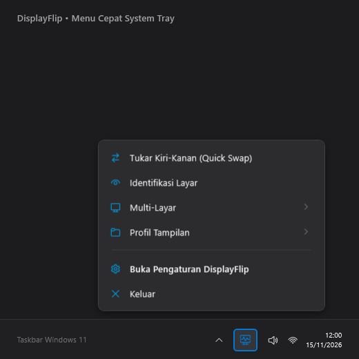
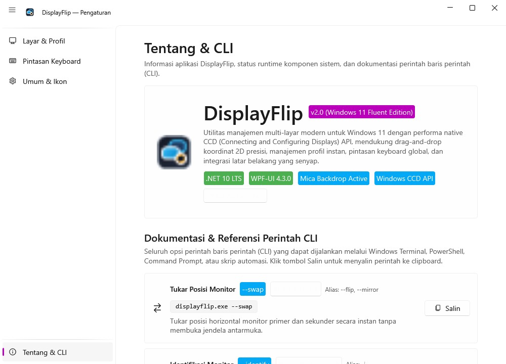

DisplayFlip vs. Windows Settings & Win+P
Built-in Windows shortcuts like Win + P (DisplaySwitch.exe) only cover four coarse projection modes. If you dock a laptop at work, switch to a TV for couch gaming, or flip your Primary screen for recording, Windows often loses monitor coordinates and refresh rates.
| Capability | Win + P | DisplayFlip v1.1.0 |
|---|---|---|
| Save unlimited custom layouts | No | Yes (Named Profiles) |
| Swap Primary + X/Y positions cleanly | Manual drag | 1-Click / Hotkey / --swap |
| Auto-wake monitor from Solo to Profile | Manual step | Automatic Extend wake |
| Command-line & JSON automation | Basic 4 flags | Full CLI + --list --json |
Light & Dark Native Windows 11 Interface
DisplayFlip adapts automatically to Windows theme changes with hardware model badges (MSI40B7), System Tray quick switching, and a conflict-safe shortcut recorder.



Troubleshooting & Setup FAQ
Which download should I choose for Windows 10 or 11?
Grab DisplayFlip-v1.1.0-win-x64.zip (~3 MB) if you have .NET 10 Desktop Runtime. Grab DisplayFlip-v1.1.0-Standalone-win-x64.exe (~74 MB) if you want zero prerequisites.
Can I trigger a profile automatically when plugging into my desk?
Yes. Combine Windows Task Scheduler or Stream Deck with DisplayFlip.exe --apply "YourProfile" so your layout restores on logon or trigger.
What happens if one screen in my saved profile is unplugged?
DisplayFlip detects disconnected targets and performs a safe partial-apply for available displays rather than throwing an error or leaving you with a black screen.